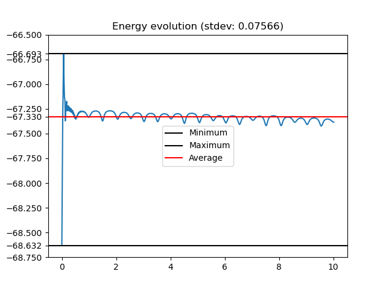

Baumgarte triple pendulum

Code used for this simulation
import pymech as pm
import numpy as np
# ------------------------
# PARAMETERS
# ------------------------
g = 9.81
dt = 0.016
T = 10
L = 1.2
m = 1.0
stiff = 1.95
# ------------------------
# SIMULATION
# ------------------------
sim = pm.Simulation(gravity=g)
# Anchor
p0 = pm.Particle(
mass=1.0,
pos=(0.0, 0.0),
vel=(0.0, 0.0),
fixed=True
)
# Chain masses
p1 = pm.Particle(mass=m, pos=(0.2, -L))
p2 = pm.Particle(mass=m, pos=(0.4, -2*L))
p3 = pm.Particle(mass=m, pos=(0.6, -3*L))
for p in [p0, p1, p2, p3]:
sim.addParticle(p)
# Rods
sim.addRod(pm.Rod(p0, p1, length=L,stiffness=stiff))
sim.addRod(pm.Rod(p1, p2, length=L,stiffness=stiff))
sim.addRod(pm.Rod(p2, p3, length=L,stiffness=stiff))
# Initial kick (important)
p1.vel = (2, 0.0)
# ------------------------
# RUN
# ------------------------
states, energies = sim.run(
dt=dt,
T=T,
trackEnergy=True,
method="Verlet",
debug=True
)
# ------------------------
# VISUALIZE
# ------------------------
sim.visualize(states, dt, None, energies)
sim.energyPlot(dt, energies)